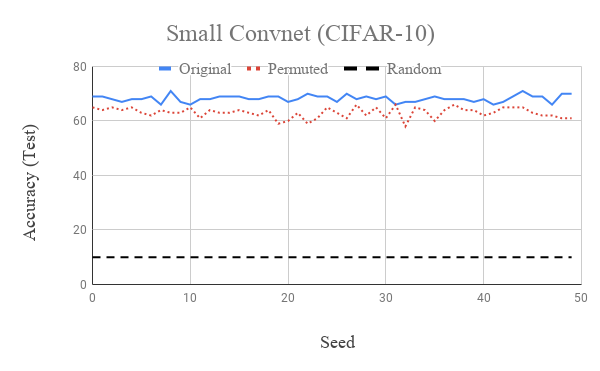

On Improving Unsupervised Learning with DeepCluster
Srinivas Eswar, Ankit Srivastava, Chunxing YinFall 2018 CS 4803 / 7643 Deep Learning: Class Project
Georgia Tech
This webpage template is based on a similar template from Dr. Devi Parikh's Intro to Computer Vision course.
Abstract
We study the stability and limitations of the state-of-the-art unsupervised image clustering network, DeepCluster, which adapts AlexNet for unsupervised learning by using k-means clustering as pseudo-labels for training. Understanding the accuracy gap between DeepCluster and supervised AlexNet will allow us to improve the accuracy of DeepCluster, characterize supervised learning networks that are suitable for this scheme as well as extend this methodology to more deep learning networks. We first analyze the stability of k-means algorithm to verify if k-means could be a reason for the lower accuracy for DeepCluster. Then, we explore how permuting target classes influence the behavior and accuracy of various deep learning networks. Combine these two result, we propose a new loss function to stablize the clustering of DeepCluster and improve its performance.
Introduction / Background / Motivation
What did you try to do? What problem did you try to solve? Articulate your objectives using absolutely no jargon. (5 points)
Datasets used in the state-of-the-art neural network training, even ImageNet [2] which contains millions of images, are relatively small as compared to the capacity of the current networks. But, building larger labeled datasets for supervised learning requires a tremendous amount of manual work. Therefore, a natural way forward is to train on massive unlabeled datasets using unsupervised learning [4]. However, currently, there is an accuracy gap between the accuracy of models trained using unsupervised learning as compared to those trained using supervised learning. For example, the difference between the accuracy of supervised AlexNet [2] and unsupervised DeepCluster [1] on classifying images in the ImageNet dataset is between 3% to 12%. This gap needs to be closed for the unsupervised learning based approaches to gain popular acceptance.In this project, we attempted to close this gap by trying to improve the methodology used in the state-of-the-art in unsupervised learning, i.e., DeepCluster [1]. The training method in [1] relies on generating "pseudo-labels" for images and then using these labels for training the network iteratively. Specifically, we set out to confirm our intuition about some problems with the way the pseudo-labels for images are generated in [1] and, then, explore different ideas to address those problems. We hoped that this would improve the accuracy of models trained using unsupervised learning methods for the image classification task.
How is it done today, and what are the limits of current practice? (5 points)
The unsupervised learning in [1] is done by alternating between the following two steps:- Output features for all the training images are generated by doing a forward pass through the model. These features are then clustered using k-means clustering algorithm. The cluster assignments are used as pseudo-labels for the corresponding training images.
- The pseudo-labels generated in the previous step are used for updating the model parameters with one pass through the training dataset.
Based on our prior experience with the k-means algorithm, we suspected that the algorithm labels clusters in a non-deterministic way, i.e., given the same features, the algorithm can permute the pseudo-labels assigned to images across epochs. This means that, for example, in a case with three clusters, the output cluster assignment can be any arbitrary mapping of the ordered set (0, 1, 2). Since the loss function used in [1] is not permutation invariant, we conjectured that if the pseudo-labels are indeed getting permuted then it would lead to the loss of accuracy and also increase the training time of the models.
Who cares? If you are successful, what difference will it make? (5 points)
Our project is aimed at improving the accuracy of the state-of-the-art in unsupervised learning methods. As discussed earlier, the accuracy gap between supervised and unsupervised learning methods is hindering widespread acceptance of the unsupervised learning methods. If the work done in this project makes a step towards closing this gap, then that would assist in a move towards using larger unlabeled datasets which can utilize current capacity of neural networks. The training time of the models using unsupervised learning would also be reduced, which will further its appeal. Moreover, this would allow existing stable supervised learning networks to be extended using unsupervised learning on pseudo-labels.Approach
What did you do exactly? How did you solve the problem? Why did you think it would be successful? Is anything new in your approach? (10 points)
The purpose of this project was to improve the accuracy of classification achieved in [1]. We believed that this was an attainable objective because of the following two key intuitions about the approach used in [1] for training the model: 1) the labels generated by k-means clustering can permute across runs, and 2) permuting the target labels during training will have a detrimental effect on the model. Since our claims were based on conjecture, we first had to prove that our intuitions were correct. Therefore, we separated the project into the following three tasks:- Verify that the labels generated by k-means algorithm are indeed permuted randomly.
- Explore the influence of permuting labels every epoch when training the network.
- If the outcome of the above two tasks match our conjecture, then try to stabilize the output of k-means to improve the overall accuracy.
1. Label stability via k-means clustering
As described earlier, cluster assignments generated by the k-means algorithm are used as pseudo-labels for training the model in DeepCluster. We surmised that the cluster assignments generated by the algorithm are arbitrary and can permute across runs. In order to verify this, we generated a small toy example using mixture of Gaussians that can be easily seperated by k-means algorithm to prevent different runs of the algorithm from converging to different local optima. We define the degree of permutation of the centroidswhere c
2. Effect of target labels permutation on training
DeepCluster uses cross-entropy loss function for training the network. We thought that this would be a problem, given the previous conjecture, because cross-entropy loss compares predicted labels with the pseudo-labels. Therefore, permuting the target classes can result in inaccurate losses, i.e., images which are correctly classified with respect to the previous targets might see a large loss whereas the images that are wrongly classified might happen to get a small loss if its prediction agrees with the permuted target. This made us believe that permuting the labels of classes between epochs should lead to a reduction in the classification accuracy achieved by the network.We gauged the effect of permuting the target labels during training by randomly permuting the target labels at the beginning of every epoch. This was done to simulate the arbitrary permutations of pseudo-labels that happens when using k-means cluster assignments in unsupervised learning. We take a permutation among classes, and assign each image to the corresponding permuted class, such that, for example, all dogs will be in the class bird, and all the birds will be in the class cat, etc.
To our knowledge, there is no previous work studying the stability of neural networks under arbitrary permutation of labels. The original paper [1] also did not address this issue and we believe that this experiment can help gain better insight into the mechanism and limits of DeepCluster.
3. Stabilizing the training with k-means clustering
The final task in this project was to come up with ways to stabilize the training, while still using the k-means algorithm for clustering the features. We hypothesized in the previous section that, if k-means algorithm arbitrarily permutes the pseudo-labels, then using cross-entropy loss function for training can cause problems with the training. Therefore, we tried to use a loss function which would be permutation invariant.We came up with two different loss functions for the purpose based on one key observation about k-means algorithm: The cluster assignments generated by the algorithm might change across runs, but the final cluster centroids will remain the same if the points assigned to the clusters are the same. Therefore, we can use some distance measure from the centroids as the loss function for stabilizing the training. We explored Kullback–Leibler divergence and L2-distance for the purpose as described below:
- Kullback–Leibler divergence loss has been used in some of the previous works [8, 9] for image classification task. For using this loss function, we first convert the output features to probabilities using the softmax function. Then, we calculate the centroid for every cluster as the average of the softmax-probabilities for all the images classified in that cluster. Finally, we use KL-divergence between the centroid and the softmax-probabilities for images in the corresponding cluster as a measure of the loss.
- L2-distance loss also seems to work well for some image classification tasks. Similar to the case of KL-divergence, we calculate the centroids by averaging the outputs of all the images in the clusters. However, unlike KL-divergence, we do not need probabilities for calculating L2-distances therefore softmax function is not used.
The above key intuition has not been used for unsupervised training using k-means clustering. Again, the original paper does not discuss the effect of different loss functions on the accuracy of the network. Therefore, we believe that this approach to calculating loss for stabilizing learning is a novel contribution.
What problems did you anticipate? What problems did you encounter? Did the very first thing you tried work? (5 points)
The training in [1] took 12 days on a Pascal P100 GPU. Due to the limited time and computing resources, we were not able to complete our experiments on a similar scale as DeepCluster. As described in detail in the Experiments section, we instead verified our hypothesis on smaller networks and easier datasets. Even though we worked with smaller datasets and networks, we believe our experiments successfully simulates all the problems we want to address.However, not all the experiments matched our hypothesis. We first trained the models on CIFAR-10 while permuting the targets during training. We expected to see an obvious loss of accuracy due to the permutation. Instead, all the networks we tried seemed to be almost unphased by the permutations. Our approach to stabilize the training with k-means, as described above, did not work as expected either. Contrary to our beliefs, the proposed loss functions did not seem to eliminate the influence of permutation and did not seem to result in a more accurate network. We will describe these problems in more detail in the next section.
Experiments and Results
How did you measure success? What experiments were used? What were the results, both quantitative and qualitative? Did you succeed? Did you fail? Why? (10 points)
DeepCluster uses a standard AlexNet architecture which consists of five convolutional layers with 96, 256, 383, 384, and 256 filters; and three fully connected layers. The original experiments train for 500 epochs on ImageNet, which takes 12 days on a Pascal P100 GPU. Due to the limited time and resources, we scaled down the size of each problem as follows:- Instead of ImageNet, we used the CIFAR datasets [7] for our experiments.
- The above simplification allowed us to run the experiments using smaller networks which we had implemented as part of HW1 in the class. These included a small convolutional network (referred to as Small Convnet), which has 3 convolutional layers and 2 fully connected layers, along with modified versions of VGG [5] and ResNet [6].
1. Label stability via k-means clustering
Our first experiment was to check if the k-means algorithm permutes clusters across multiple iterations. We generated a toy dataset comprising of 3 clusters drawn from Guassian Distributions with different centres. The generated points are shown in Fig.2(a). We then ran the k-means algorithm for 10 iterations and checked the Frobenius norm difference between the centroids discoverd from the original centroids. We also sort the centroids lexicographically and plot the Frobenius difference.As can be seen from Fig.2(b), even though the algorithm successfully discovered the correct centroids for every run there is still a large error when compared to the original centroids unless they are sorted to avoid permutations. Therefore, the results of this experiment demonstrated that our first conjecture was correct, i.e., k-means algorithm arbirarily permutes the cluster assignments.
2. Effect of target labels permutation on training
Once we had verified that the pseudo-labels generated using k-means algorithm are unstable, we experimented with the effect of this unstability on the model accuracy. We started by training the small convnet on CIFAR-10, and compared the validation accuracy with and without label permutations. The corresponding results for seeds 0 and 4 are shown in Fig.3(a) and 3(b), respectively. The random permutation of labels was done at every vertical gridline in the plots.
It can be observed from the plots that even though the validation accuracy of the network dropped below random guessing, after permutation, it quickly recovers and gets close to the accuracy of the original network within the epoch. This was a surprising result for us because we had expected the permutations to significantly impact the network, as discussed earlier. Therefore, we further investigated how the weights in different layers of the network changed across epochs. We plotted the relative change in weights across epochs for different layers as shown below.

As expected, the weights of convolutional layers, shown in Fig.4(a), do not change a lot after the first few epochs whereas the weights of the fully connected layers, shown in Fig.4(b) keep changing. Further, the magnitude of change in the weights of the fully connected layers is more when the labels are being permuted. This led us to conclude that the fully connected layer is learning the permutation quickly, since the total number of permutations is relatively few.

Fig.4(a): Variation in the test accuracy of Small Convnet

References
- Caron, Mathilde, Piotr Bojanowski, Armand Joulin, and Matthijs Douze. "Deep Clustering for Unsupervised Learning of Visual Features." In Computer Vision–ECCV 2018, pp. 139-156. Springer, Cham, 2018.
- Krizhevsky, Alex, Ilya Sutskever, and Geoffrey E. Hinton. "Imagenet classification with deep convolutional neural networks." In Advances in neural information processing systems, pp. 1097-1105. 2012.
- Deng, Jia, Wei Dong, Richard Socher, Li-Jia Li, Kai Li, and Li Fei-Fei. "Imagenet: A large-scale hierarchical image database." In Computer Vision and Pattern Recognition, 2009. CVPR 2009. IEEE Conference on, pp. 248-255. Ieee, 2009.
- Coates, Adam, and Andrew Y. Ng. "Learning feature representations with k-means." In Neural networks: Tricks of the trade, pp. 561-580. Springer, Berlin, Heidelberg, 2012.
- Simonyan, Karen, and Andrew Zisserman. "Very deep convolutional networks for large-scale image recognition." arXiv preprint arXiv:1409.1556 (2014).
- He, Kaiming, Xiangyu Zhang, Shaoqing Ren, and Jian Sun. "Deep residual learning for image recognition." In Proceedings of the IEEE conference on computer vision and pattern recognition, pp. 770-778. 2016.
- Krizhevsky, Alex, Vinod Nair, and Geoffrey Hinton. "The CIFAR-10 dataset." online: http://www.cs.toronto.edu/kriz/cifar.html (2014).
- Kwitt, Roland, and Andreas Uhl. "Image similarity measurement by Kullback-Leibler divergences between complex wavelet subband statistics for texture retrieval." In Image Processing, 2008. ICIP 2008. 15th IEEE International Conference on, pp. 933-936. IEEE, 2008.
- Pheng, Hang See, Siti Mariyam Shamsuddin, Wong Yee Leng, and Razana Alwee. "Kullback Leibler divergence for image quantitative evaluation." In AIP Conference Proceedings, vol. 1750, no. 1, p. 020003. AIP Publishing, 2016.
Additional Points to Consider (REMOVE BEFORE SUBMISSION)
Appropriate use of visual aids. Are the ideas presented with appropriate illustration? Is the problem effectively visualized? Is the approach visualized appropriately? Are the results presented clearly; are the important differences illustrated? Every section and idea does not need a visual aid, but the most interesting and complex parts of the project should be illustrated. (5 points)
Nemo enim ipsam voluptatem quia voluptas sit aspernatur aut odit aut fugit, sed quia consequuntur magni dolores eos qui ratione voluptatem sequi nesciunt.Overall clarity. Is the presentation clear? Can a peer who has also taken Deep Learning understand all of the points addressed above? Is sufficient detail provided? (5 points)
Nemo enim ipsam voluptatem quia voluptas sit aspernatur aut odit aut fugit, sed quia consequuntur magni dolores eos qui ratione voluptatem sequi nesciunt.Finally, points will be distributed based on your understanding of how your project relates to Deep Learning. Here are some questions to think about: (10 points)
- What was the structure of your problem? How did the structure of your model reflect the structure of your problem?
- What parts of your model had learned parameters (e.g., convolution layers) and what parts did not (e.g., post-processing classifier probabilities into decisions)?
- What representations of input and output did the neural network expect? How was the data pre/post-processed?
- What was the loss function?
- Did the model overfit? How well did the approach generalize?
- What hyperparameters did the model have? How were they chosen? How did they affect performance? What optimizer was used?
- What Deep Learning framework did you use?
- What existing code or models did you start with and what did those starting points provide?